The big picture
Part A · Currents make fields
Oersted's experiment, field lines, flux Φ and flux density B, fields of a wire, coil and solenoid.
Go to Part A →Part B · Fields push currents
F = qvB sinθ, circular motion, F = ILB sinθ, the electric motor.
Go to Part B →Part C · Changing fields make currents
Induction, Faraday and Lenz, ε = Blv, levitation, generators.
Go to Part C →Basics first
Open each card. If you already know it, tick it off and move on.
🧲 What is a magnet?
Every magnet has two poles, North (N) and South (S). Unlike poles attract, like poles repel. Cut a magnet and each piece still has both poles. A compass needle is a tiny magnet; it points north because the Earth acts like a giant magnet.
Magnets attract iron, nickel and cobalt.
🌫️ What is a field?
Cooking smell: strong near the stove, weak far away (strength changes with place), and it drifts from the stove to you (direction). A field is the space around an object where it can push or pull other things without touching, with a strength and direction at every point.
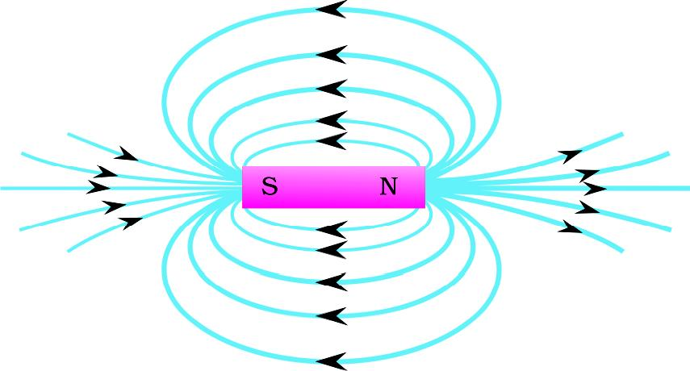
🔌 What is electric current?
Current is the flow of charge: $I=\dfrac{Q}{t}$, unit ampere (A). 1 A = 1 coulomb per second. We draw current from + to − (old convention); electrons really move the other way. Follow the drawn direction in this chapter.
⊙ ⊗ Arrows into and out of the page
⊙ (dot): pointing out of the page, towards you (you see the arrow tip). ⊗ (cross): into the page, away from you (you see the tail feathers).
Dot or cross?
🖐️ Your right hand is the tool of this chapter
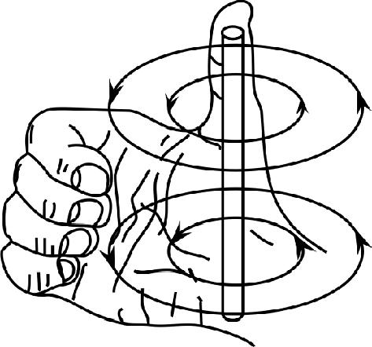
Straight wire. Thumb = current, curled fingers = field.
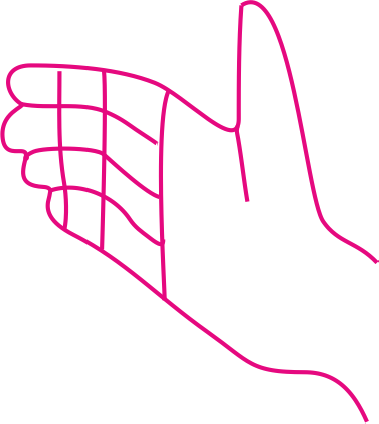
Curled fingers = current, thumb = N pole.
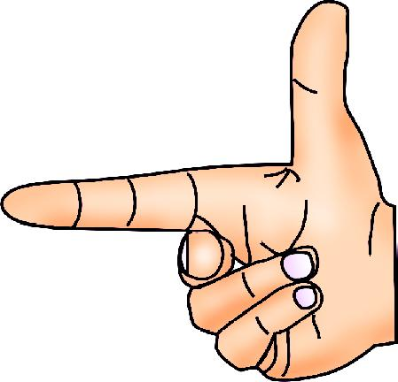
Forefinger = I (or v), middle finger = B, thumb = F.
📏 Symbols and units
| Quantity | Symbol | SI unit | In plain words |
|---|---|---|---|
| Current | $I$ | ampere (A) | how fast charge flows |
| Charge | $q$, $Q$ | coulomb (C) | amount of charge |
| Velocity | $v$ | m/s | speed with direction |
| Flux density | $B$ | tesla (T) | strength of the field |
| Flux | $\Phi$ | weber (Wb) | total field through an area |
| Force | $F$ | newton (N) | a push or pull |
| Induced emf | $\varepsilon$ | volt (V) | electrical push that drives current |
🧮 Maths toolkit: powers of ten, units, rearranging, sin/cos, Δ, proportion
Powers of ten
Proton charge $0.00000000000000000016$ C $=1.6\times10^{-19}$ C. Rules: $10^a\times10^b=10^{a+b}$, $\dfrac{10^a}{10^b}=10^{a-b}$.
Example: $(2\times10^6)(1.6\times10^{-19})(0.5)$: numbers $2\times1.6\times0.5=1.6$; powers $10^{6-19}=10^{-13}$; answer $1.6\times10^{-13}$.
Changing units
- cm → m: divide by 100 (20 cm = 0.2 m)
- mm → m: divide by 1000
- cm² → m²: divide by $10^4$ (4 cm² = $4\times10^{-4}$ m²)
- minutes → s: multiply by 60
Rearranging: the balance method
Do the same to both sides. From $F=ILB$: $B=\dfrac{F}{IL}$, $I=\dfrac{F}{LB}$, $L=\dfrac{F}{IB}$.
Sine and cosine
| θ | 0° | 30° | 45° | 60° | 90° |
|---|---|---|---|---|---|
| sin θ | 0 | ½ | 1/√2 | √3/2 | 1 |
| cos θ | 1 | √3/2 | 1/√2 | ½ | 0 |
In $F=qvB\sin\theta$, θ is between $v$ and $B$. In $\Phi=BA\cos\theta$, θ is between $B$ and the normal to the plane.
Δ means change; rate of change = change ÷ time
$\Delta\Phi=\Phi_{\text{final}}-\Phi_{\text{initial}}$, and $\varepsilon=\Delta\Phi/\Delta t$. Flux falls 0.5 → 0.1 Wb in 0.2 s: $|\varepsilon|=0.4/0.2=2$ V.
If this doubles, what happens?
| Formula | If this doubles | That |
|---|---|---|
| $F=ILB$ | B | F doubles |
| $F=ILB$ | I and L | F × 4 |
| $r=\frac{mv}{Bq}$ | B | r halves |
| $\varepsilon=Blv$ | v | ε doubles |
Currents make magnetic fields
10.1 Oersted's experiment 2M4M
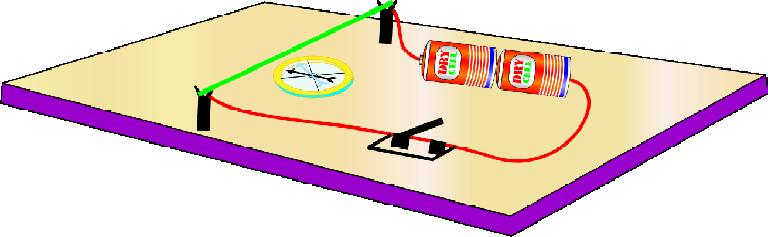
- Wire passes over a compass, in series with battery and key.
- Bring a bar magnet near: the needle deflects.
- Remove the magnet, switch on: the needle deflects again!
- Switch off: the needle returns to N–S.
Do you know? Hans Christian Oersted (1777–1851)
- In April 1820 he placed a compass under a wire and switched on a current: the needle deflected.
- This began electromagnetism and led to motors, dynamos, radio and TV.
- The old unit of field strength, the oersted, is named after him.
10.2 Magnetic field and field lines 1M2M
A magnetic field is the region around a magnet where its force can be felt. It has strength and direction.
- Field lines are imaginary curves; the tangent at a point gives the field direction.
- Crowded lines = strong field; spread lines = weak field.
- Uniform field: strength and direction constant (parallel, equally spaced lines). Otherwise non-uniform.
- Field lines never cross, and they form closed loops.
Compass explorer: bar magnet
Drag or tap anywhere: the compass needle shows the field direction there. Press “Trace line” to follow the field line from your point, as in Activity 3.
10.2.2 Flux and flux density 1M2M
Flux through a tilted plane: Φ = BA cosθ
Edge view. Orange = the plane, dashed = its normal, blue = field lines. Try θ = 0° (max) and θ = 90° (zero).
10.3 Fields of a wire, coil and solenoid 2M4M
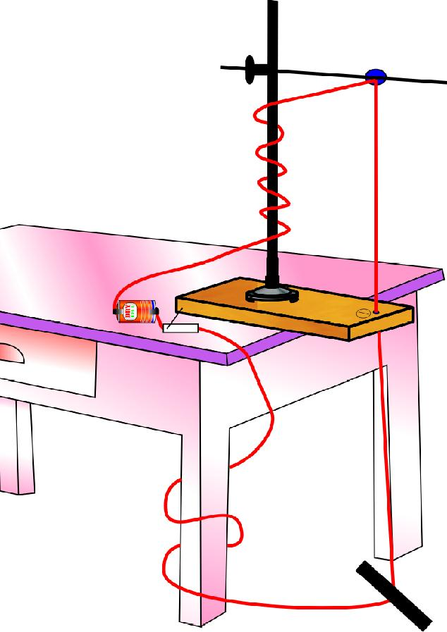
Straight wire
Needles set along tangents to a circle; iron filings form concentric circles. Field lines are closed loops in a plane perpendicular to the wire, closer together (stronger) near the wire.
Right-hand thumb rule: field around a wire
More current → compass needles and circles get denser: the field is stronger.
Circular coil
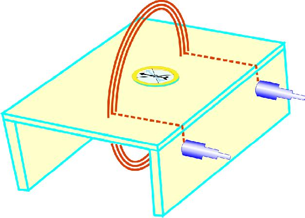
- At the centre the field is along the axis, perpendicular to the plane of the coil.
- The face where the field comes out is the N pole; the other is S.
Which face is North?
Solenoid
- Behaves like a bar magnet; find N and S with the coil rule.
- Outside, lines go N → S; inside, S → N, strong and nearly uniform.
- Lines are closed loops.
Fields push on currents
10.4 Force on a moving charge 1M2M
Bring a magnet near an old CRT TV and the picture distorts: the field pushes on the moving electrons.
| Situation | sin θ | Force |
|---|---|---|
| θ = 90° (v ⟂ B) | 1 | maximum, qvB |
| θ = 0° or 180° (along/against B) | 0 | zero |
| v = 0 (charge at rest) | – | zero |
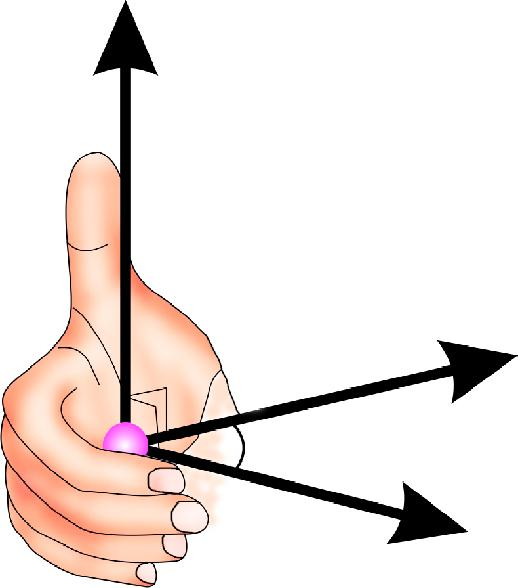
Charged particle in a magnetic field
Double B and watch r halve. Change v: the circle grows but T does not change. Flip the charge sign: the circle reverses.
Force on a current-carrying wire 4M
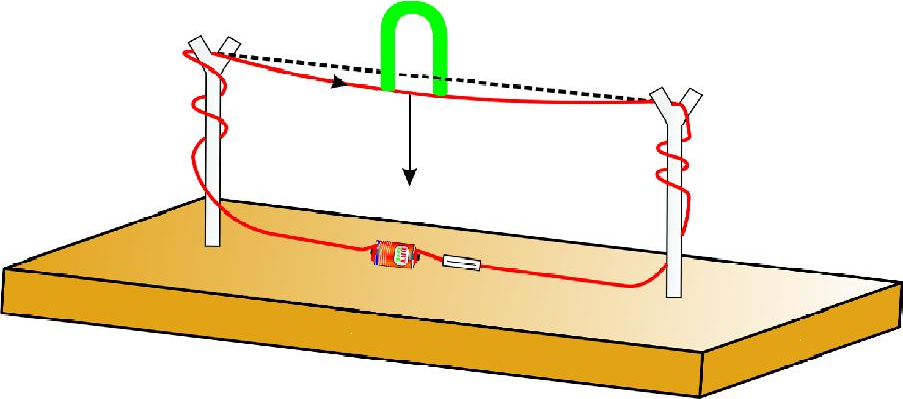
- Copper wire between split sticks, 9 V battery, switch.
- Switch on and bring a horseshoe magnet around the wire: it is deflected.
- Reverse the magnet or the current: deflection reverses.
Force direction: the right hand rule as a calculator
Axes: x → right, y ↑ up, z ⊙ out of the page. F = I × B (forefinger × middle finger → thumb). If I ∥ B the force is zero.
Size of the force: F = ILB sinθ
Why does the wire move? Combining the fields
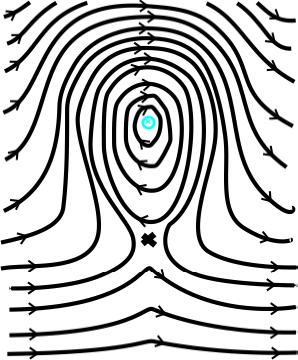
- On one side the wire's field points with the magnet's field: strong.
- On the other it points against: weak.
- The wire is pushed from the strong region to the weak region.
10.4.1 The electric motor 4M
- A wire carrying current in a field gets pushed sideways.
- A coil has two long sides with opposite currents: one is pushed up, the other down, so the coil spins.
- After half a turn the push would reverse the spin. The split ring (commutator) reverses the current at that moment, so the coil keeps turning the same way.
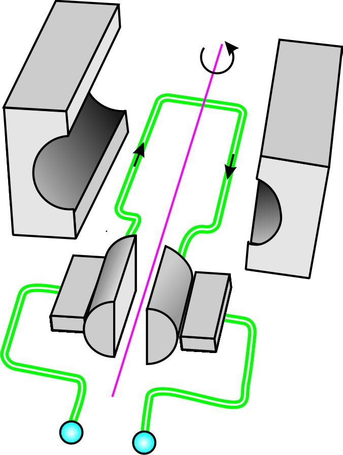
- AB and CD are ⟂ B, so each gets force ILB; they are equal and opposite, so net force = 0, but they act on different lines: a couple that rotates the coil.
- Without reversal the coil overshoots and rocks to and fro.
- Split rings C₁, C₂ and brushes B₁, B₂ reverse the current every half turn.
Motor: why the commutator matters
Changing fields make currents
10.5 Electromagnetic induction 2M4M
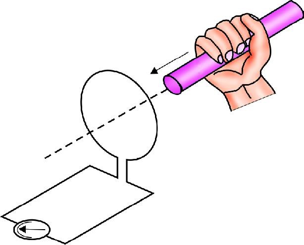
| What we do | Galvanometer |
|---|---|
| Magnet at rest near coil | no deflection |
| N pole moved towards coil | deflects one way |
| N pole moved away | deflects the other way |
| S pole instead | reversed |
| Coil moved, magnet fixed | also deflects |
Faraday + Lenz: drag the magnet
Drag the magnet left and right. Push it in slowly, then quickly. Hold it still. Pull it out. The graph below the coil is the induced emf over time.
Faraday's and Lenz's laws 1M2M4M
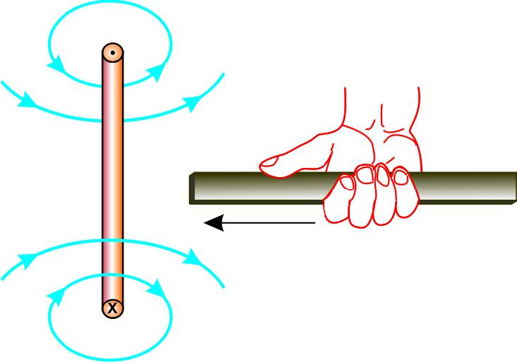
Derivation 4: motional emf ε = Blv 4M
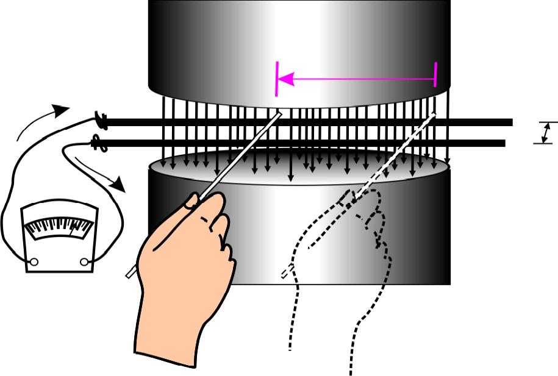
Sliding rod: ε = Blv
Applications and levitation 2M4M
Metal detector
A large coil with weak AC field. Iron on the body changes the flux; the induced current triggers an alarm.
Tape recorder
Magnetised iron-oxide tape moves past a head coil; the changing field induces a current.
Induction stove
AC coil under the surface induces current in the metal pan; its resistance turns that into heat.
ATM card swipe
The magnetic strip moves past a coil; the changing flux induces a pattern read as data.
Magnetic levitation
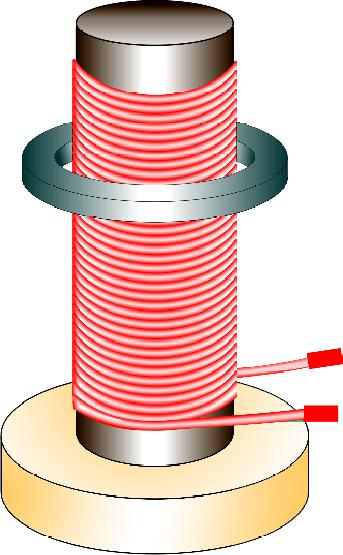
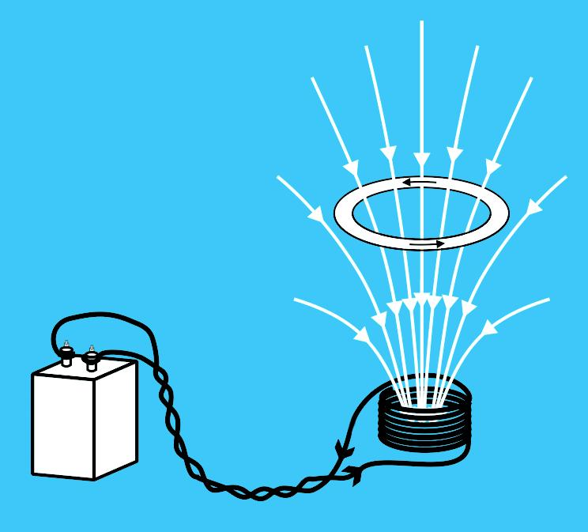
Generators 4M
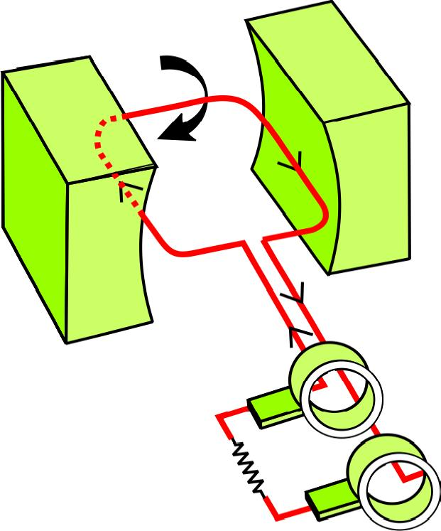
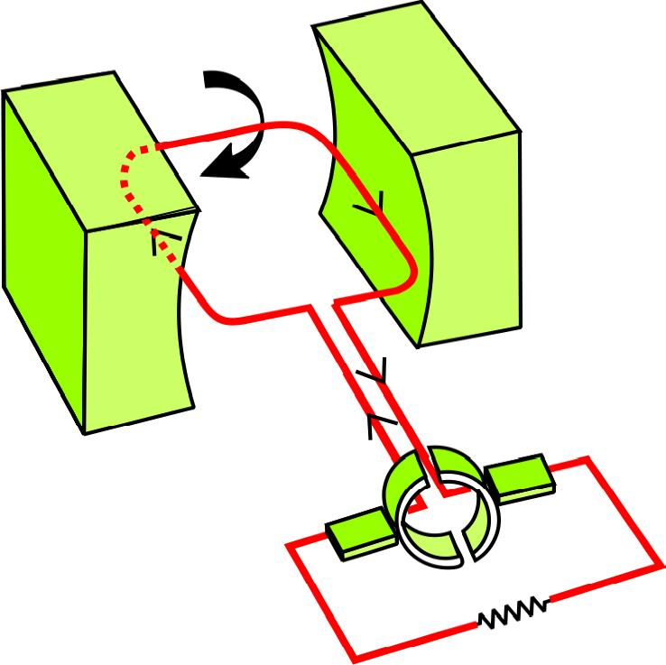
Spin the coil: AC and DC generator
Vertical coil (plane ⟂ field): flux is maximum but changing slowest, so emf = 0. Horizontal coil (plane ∥ field): flux changing fastest, so emf is maximum.
| Feature | Electric motor | Generator |
|---|---|---|
| Energy change | electrical → mechanical | mechanical → electrical |
| Principle | force on current in a field (F = ILB) | electromagnetic induction (ε = ΔΦ/Δt) |
| Input / output | current / rotation | rotation / induced current |
| Rings | split rings | AC: full slip rings; DC: split rings |
| Direction rule | right hand rule / Fleming's left hand | Lenz's law |
Formula sheet and summary
Tip: tap “Hide” on a row to cover the formula and test yourself.
| Quantity | Formula / unit |
|---|
All derivations at a glance
| # | Result | Key idea |
|---|---|---|
| 1 | $\Phi=BA\cos\theta$ | effective area ⟂ field is $A\cos\theta$ |
| 2 | $r=\frac{mv}{Bq}$, $T=\frac{2\pi m}{Bq}$ | magnetic force = centripetal force |
| 3 | $F=ILB\sin\theta$ | add $qvB$ over all charges, $v=L/t$, $I=Q/t$ |
| 4 | $\varepsilon=\frac{\Delta\Phi}{\Delta t}$, $\varepsilon=Blv$ | work done = electrical energy; $\Delta\Phi=Bls$; $P=\varepsilon I=Fv$ |
Concept map
Current →(Oersted)→ Magnetic field →(F = qvB, ILB)→ Force / Motor
↑ ↓
Generator ←(Faraday, Lenz)← Changing flux
Common mistakes that lose marks
- No arrows on field lines.
- Using θ between B and the plane instead of the normal in Φ = BA cosθ.
- Forgetting F = 0 when the wire or charge is parallel to B.
- Not reversing the force for an electron.
- Using cm or cm² in formulas.
- Forgetting N in ε = N ΔΦ₀/Δt.
- Mixing up motor (split rings) and AC generator (slip rings).
Diagrams to practise
fig-2 bar magnet lines · fig-4(b,c) wire with ⊙ ⊗ · fig-6(b) solenoid N, S · fig-8(b) force rule · fig-12 coil and motor · fig-13 and fig-15 induction set-ups · fig-17 AC generator and emf graph.